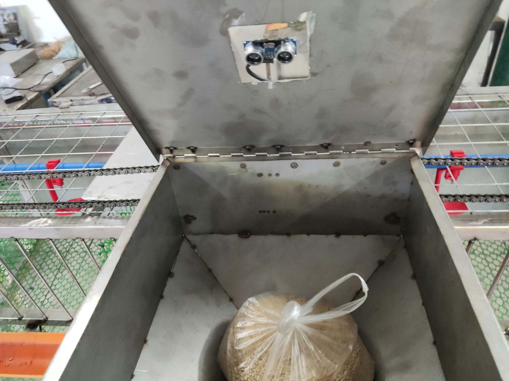

Automated poultry feeding and water monitoring
A feeder that weighs every tray before it pours.
Feeding by hand is repetitive, and it is hard to know how much each bird actually received. HyFePoul carries a hopper of feed along a chain over five trays. A scale under each tray tells the machine what is already there, so it pours only what is missing.
It also watches the water reservoir and sends device data to a mobile app. This page lets you look inside the machine as it was built.
Explore the machine
The machine, part by part
Drag to turn. Scroll or pinch to zoom. Tap a number to learn about that part.
Loading the 3D model…
See it working
Short recordings of each function on the real machine.
Every part
Select a part to find it on the model. Measured (CAD) comes from our CAD drawing, Datasheet from the published size of the module, and Estimated from photos. Check means we could not confirm it from our records.
How it connects
The Arduino Mega makes every decision on the machine. The ESP32 only carries messages to the internet, and the app talks to the cloud, never directly to the Mega.
Measured results
What we recorded on the machine, including where it falls short.
Trays that are already full
A second 50 g feed, with every tray already at its target, poured nothing.
Limits
- Very small amounts are not precise. A 10 g target landed between 8 and 20 g, because the auger drops pellets in clumps.
- The hopper level is an estimate. Its sensor sits above the auger, and a dip in the feed can make it read low.